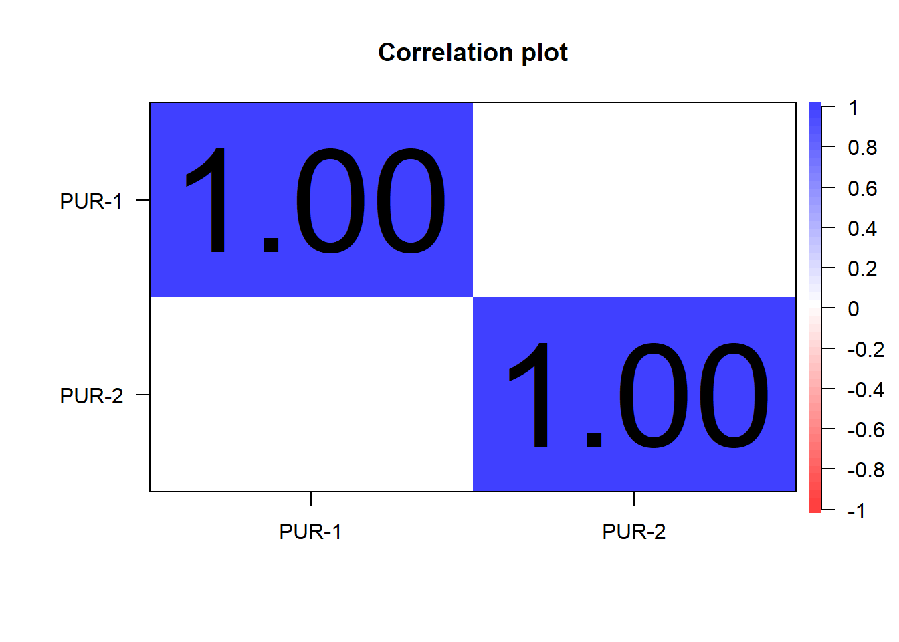
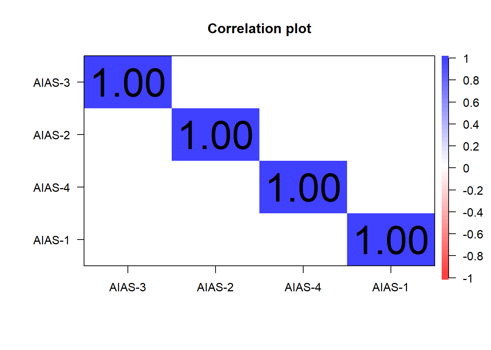
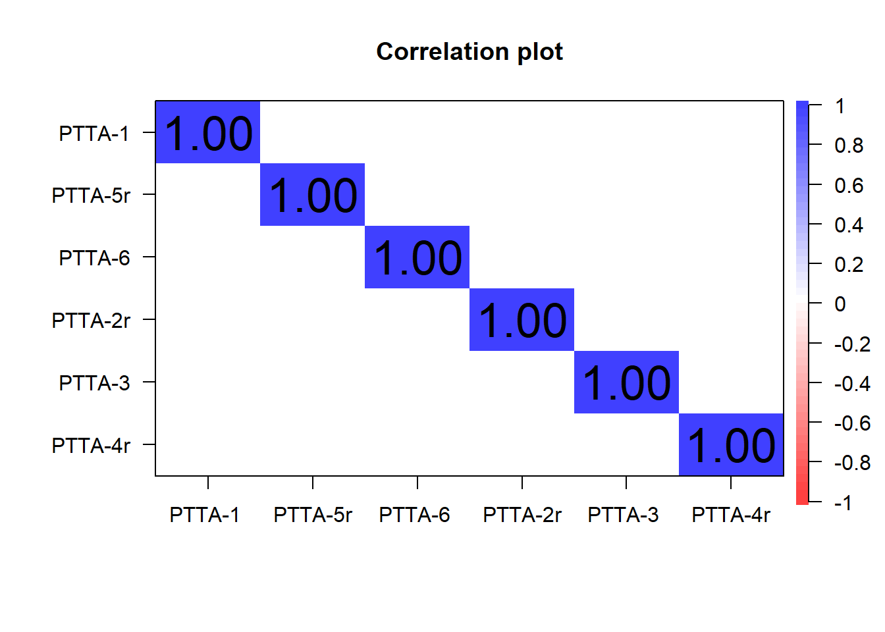
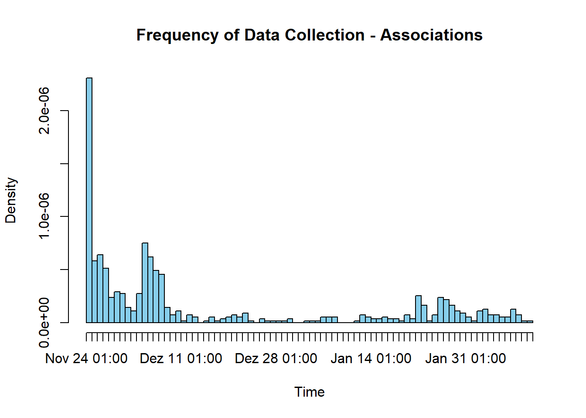

createRawFiles <- TRUEData preperation all studies
1 Notes
2 global variables
Define your global variables (e.g., to reduce run time):
3 functions
########################################
# from JATOS data set to classical data frame (2D)
########################################
### argss:
# dataset = dat_secondPostCAM
# listvars = vec_ques
# notNumeric = vec_notNumeric
# verbose = TRUE
questionnairetype <- function(dataset,
listvars = ques_mixed,
notNumeric = vec_notNumeric,
verbose=FALSE){
datasetques <- data.frame(ID = unique(dataset$ID))
for(c in 1:length(listvars)){
if(verbose){
print(c)
}
if(any(colnames(dataset) == listvars[c])){
if(verbose){
print(listvars[c])
}
## tmp IDs
tmpid <- dataset$ID[!is.na(dataset[, listvars[c]])]
## tmp value variable
tmpvalue <- dataset[, listvars[c]][!is.na(dataset[, listvars[c]])]
datasetques[listvars[c]] <- NA
if(listvars[c] %in% notNumeric){
datasetques[datasetques$ID %in% tmpid, listvars[c]] <- tmpvalue
}else if(is.list(tmpvalue)){
tmpvalue_tmp <- unique(tmpvalue)
tmpvalue <- c()
counter = 1
for(i in 1:length(tmpvalue_tmp)){
if(!is.null(tmpvalue_tmp[[i]])){
tmpvalue[counter] <- paste0(tmpvalue_tmp[[i]], collapse = " - ")
counter = counter + 1
}
}
datasetques[datasetques$ID %in% tmpid, listvars[c]] <- tmpvalue
}else{
datasetques[datasetques$ID %in% tmpid, listvars[c]] <- as.numeric(tmpvalue)
}
}
}
return(datasetques)
}########################################
# from list of associations to classical data frame (2D)
########################################
### argss:
# association_list = sucsessfulAssociations
# metadata_df = ques_study
# association_list = sucsessfulAssociations
# metadata_df = ques_study
process_association_data <- function(association_list, metadata_df) {
# Initialize output data frame
output_df <- data.frame(
participant_id = character(),
study_condition = character(),
gender = character(),
age = integer(),
cue = character(),
response = character(),
response_position = integer(),
response_level = integer(),
timestamp = character(),
time_diff_sec = numeric(),
stringsAsFactors = FALSE
)
# Loop through all participants
for (i in seq_along(association_list)) {
# Get associations
assoc <- association_list[[i]]
assoc_L1 <- assoc[1:5, ]
assoc_L2 <- assoc[6:nrow(assoc), ]
# Get participant metadata
meta <- metadata_df[i, ]
pid <- meta$PROLIFIC_PID
study_condition <- meta$study_condition
gender <- meta$sociodemo_gender
age <- meta$sociodemo_age
if(nrow(assoc_L1) != 5){
cat("assoc_L1 not 5 for:", pid, "\n")
}
if(nrow(assoc_L2) != 25){
cat("assoc_L2 not 25 but", nrow(assoc_L2), "for:", pid, "\n")
}
if(is.null(assoc_L1$valence)){
assoc_L1$valence <- NA
}
if(is.null(assoc_L2$valence)){
assoc_L2$valence <- NA
}
# --- Level 1: responses ---
df_level1 <- data.frame(
participant_id = pid,
study_condition = study_condition,
gender = gender,
age = age,
cue = assoc_L1$cue,
valence = assoc_L1$valence,
response = assoc_L1$response,
response_position = seq_along(assoc_L1$cue),
response_level = 1,
timestamp = assoc_L1$timestamp,
stringsAsFactors = FALSE
)
# --- Level 2: responses ---
df_level2 <- data.frame(
participant_id = pid,
study_condition = study_condition,
gender = gender,
age = age,
cue = assoc_L2$cue,
valence = assoc_L2$valence,
response = assoc_L2$response,
response_position = as.numeric(ave(assoc_L2$cue, assoc_L2$cue, FUN = seq_along)), #rep(1:5, times = 5)
response_level = 2,
timestamp = assoc_L2$timestamp,
stringsAsFactors = FALSE
)
# Combine both levels
combined <- rbind(df_level1, df_level2)
# Convert timestamp and calculate time difference from first response
combined$timestamp <- as.POSIXct(combined$timestamp, format = "%Y-%m-%dT%H:%M:%OSZ", tz = "UTC")
combined$time_diff_sec <- as.numeric(difftime(combined$timestamp, combined$timestamp[1], units = "secs"))
# Append to final output
output_df <- rbind(output_df, combined)
}
return(output_df)
}4 load packages
### load packages (also packages loaded, which are not needed for data preperation)
require(pacman)
p_load('tidyverse', 'jsonlite',
'stargazer', 'DT', 'psych',
'writexl', 'associatoR')
# devtools::install_github("samuelae/associatoR")5 create raw data files
if(createRawFiles){
# Define root paths
source_root <- "data"
output_dir <- "outputs/raw"
# Define studies with paths
studies <- list(
study = file.path(source_root)
)
# Loop over each study
for (study_name in names(studies)) {
study_path <- studies[[study_name]]
# Get folders matching pattern "study_result*"
tmp_folders <- list.files(study_path, pattern = "^study_result.*", full.names = TRUE)
results <- list()
for (folder in tmp_folders) {
# Look for a single subdirectory inside the folder
inner_folders <- list.files(folder, full.names = TRUE)
if (length(inner_folders) == 1) {
data_file <- file.path(inner_folders[1], "data.txt")
if (file.exists(data_file)) {
# Load and store the JSON data
tmp <- fromJSON(data_file)
results[[length(results) + 1]] <- tmp
}
}
}
# Save as RDS
saveRDS(results, file = file.path(output_dir, paste0(study_name, ".rds")))
# Optionally also save as JSON Lines (.jsonl)
json_lines <- map_chr(results, ~ toJSON(.x, auto_unbox = TRUE))
writeLines(json_lines, con = file.path(output_dir, paste0(study_name, ".jsonl")))
}
print("Raw files have been created in this run!")
}else{
print("Raw files have been created in previous run!")
}[1] "Raw files have been created in this run!"6 prepare data questionnaires
6.1 study 1
load data:
output_dir <- "outputs/raw"
# Load the RDS files into a named list
study <- readRDS(file.path(output_dir, "study.rds"))
# Combine into single data.frame
suppressMessages({
dat <- bind_rows(study)
})
rm(study)counter variable:
dat$ID <- cumsum(dat$sender == "Greetings" & !is.na(dat$sender))
table(dat$ID)
1 2 3 4 5 6 7 8 9 10 11 12 13 14 15 16 17 18 19 20
2 2 41 43 2 2 43 43 43 43 2 43 2 43 43 43 43 43 2 43
21 22 23 24 25 26 27 28 29 30 31 32 33 34 35 36 37 38 39 40
43 43 43 43 43 43 2 43 43 2 43 43 43 2 43 43 2 43 43 43
41 42 43 44 45 46 47 48 49 50 51 52 53 54 55 56 57 58 59 60
43 2 43 43 43 2 43 43 2 43 43 43 43 43 43 43 43 43 43 43
61 62 63 64 65 66 67 68 69 70 71 72 73 74 75 76 77 78 79 80
43 43 2 43 43 43 2 2 43 43 43 43 2 43 43 2 2 43 2 2
81 82 83 84 85 86 87 88 89 90 91 92 93 94 95 96 97 98 99 100
43 43 43 2 43 43 43 43 43 43 43 43 2 2 43 2 43 2 43 43
101 102 103 104 105 106 107 108 109 110 111 112 113 114 115 116 117 118 119 120
43 43 2 43 43 43 2 2 43 43 43 43 2 43 43 43 2 43 43 2
121 122 123 124 125 126 127 128 129 130 131 132 133 134 135 136 137 138 139 140
43 2 43 2 2 43 2 43 43 43 43 2 2 43 43 43 43 43 43 2
141 142 143 144 145 146 147 148 149 150 151 152 153 154 155 156 157 158 159 160
43 43 43 2 43 43 43 43 43 43 43 43 43 2 43 43 2 43 43 43
161 162 163 164 165 166 167 168 169 170 171 172 173 174 175 176 177 178 179 180
2 43 43 43 43 43 43 43 43 2 2 43 43 43 43 43 43 43 43 43
181 182 183 184 185 186 187 188 189 190 191 192 193 194 195 196 197 198 199 200
43 43 2 2 43 43 43 43 43 43 43 43 43 43 43 43 43 2 43 2
201 202 203 204 205 206 207 208 209 210 211 212 213 214 215 216 217 218 219 220
43 43 43 43 43 2 43 43 43 43 2 43 43 43 43 43 43 43 43 43
221 222 223 224 225 226 227 228 229 230 231 232 233 234 235 236 237 238 239 240
43 43 43 43 43 2 43 43 43 43 43 43 2 43 43 43 2 43 43 43
241 242 243 244 245 246 247 248 249 250 251 252 253 254 255 256 257 258 259 260
43 43 2 43 43 43 43 43 2 43 2 43 43 43 43 43 43 43 43 43
261 262 263 264 265 266 267 268 269 270 271 272 273 274 275 276 277 278 279 280
43 43 43 43 43 43 43 43 43 2 43 43 2 43 43 43 43 2 43 43
281 282 283 284 285 286 287 288 289 290 291 292 293 294 295 296 297 298 299 300
43 43 43 43 43 43 43 43 43 2 2 2 43 43 43 43 43 43 43 43
301 302 303 304 305 306 307 308 309 310 311 312 313 314 315 316 317 318 319 320
43 43 2 43 2 43 43 43 43 43 43 43 43 2 43 2 43 43 43 43
321 322 323 324 325 326 327 328 329 330 331 332 333 334 335 336 337 338 339 340
43 43 43 43 43 43 43 43 2 43 43 43 43 2 43 43 43 43 43 43
341 342 343 344 345 346 347 348 349 350 351 352 353 354 355 356 357 358 359 360
43 43 2 43 43 43 43 43 2 43 43 43 43 2 43 43 43 43 43 43
361 362 363 364 365 366 367 368 369 370 371 372 373 374 375 376 377 378 379 380
43 43 43 2 43 43 43 43 43 43 2 43 43 43 2 43 43 43 43 43
381 382 383 384 385 386 387 388 389 390 391 392 393 394 395 396 397 398 399 400
43 43 43 43 43 43 43 43 43 2 43 43 43 43 43 43 43 43 43 43
401 402 403 404 405 406 407 408 409 410 411 412 413 414 415 416 417 418 419 420
43 43 43 43 43 43 43 43 43 43 43 43 43 43 43 43 2 43 2 43
421 422 423 424 425 426 427 428 429 430 431 432 433 434 435 436 437 438 439 440
41 2 43 43 43 2 43 43 43 43 43 43 2 2 2 43 43 43 43 43
441 442 443 444 445 446 447 448 449 450 451 452 453 454 455 456 457 458 459 460
2 43 43 43 43 43 43 43 2 43 43 2 43 43 43 43 43 43 2 2
461 462 463 464 465 466 467 468 469 470 471 472 473 474 475 476 477 478 479 480
43 43 43 2 2 2 43 43 43 43 43 2 43 43 43 43 43 43 43 43
481 482 483 484 485 486 487 488 489 490 491 492 493 494 495 496 497 498 499 500
43 43 43 43 43 43 43 43 43 43 43 43 2 43 2 43 43 43 2 43
501 502 503 504 505 506 507 508 509 510 511 512 513 514 515 516 517 518 519 520
43 43 43 43 43 43 43 43 43 43 43 2 43 43 43 2 43 43 43 41
521 522 523 524 525 526 527 528 529 530 531 532 533 534 535 536 537 538 539 540
43 2 43 43 43 43 43 43 41 43 2 2 2 43 2 43 43 43 43 43
541 542 543 544 545 546 547 548 549 550 551 552 553 554 555 556 557 558 559 560
43 43 43 43 43 43 43 43 2 2 43 43 43 43 2 43 43 43 43 43
561 562 563 564 565 566 567 568 569 570 571 572 573 574 575 576 577 578 579 580
43 43 43 43 43 43 43 43 43 2 43 43 43 43 43 43 43 43 2 43
581 582 583 584 585 586 587 588 589 590 591 592 593 594 595 596 597 598 599 600
43 43 43 43 43 43 43 43 43 43 43 43 43 43 43 2 43 43 43 43
601 602 603 604 605 606 607 608 609 610 611 612 613 614 615 616 617 618 619 620
43 2 43 2 43 43 43 43 2 43 43 43 43 2 43 43 43 43 43 43
621 622 623 624 625 626 627 628 629 630 631 632 633 634 635 636 637 638 639 640
2 43 43 43 43 43 43 43 43 43 43 43 43 43 2 43 43 43 43 2
641 642 643 644 645 646 647 648 649 650 651 652 653 654 655 656 657 658 659 660
43 43 43 43 43 43 2 43 43 43 43 2 2 43 43 43 43 43 43 43
661 662 663 664 665 666 667 668 669 670 671 672 673 674 675 676 677 678 679 680
43 43 43 2 2 2 43 2 43 43 43 43 43 2 43 43 43 43 43 43
681 682 683 684 685 686 687 688 689 690 691 692 693 694 695 696 697 698 699 700
43 43 43 2 2 43 43 43 43 43 43 2 43 2 2 43 43 43 43 43
701 702 703 704 705 706 707 708 709 710 711 712 713 714 715 716 717 718 719 720
43 43 2 43 43 43 43 43 43 43 43 2 43 43 43 2 43 43 43 43
721 722 723 724 725 726 727 728 729 730 731 732 733 734 735 736 737 738 739 740
43 2 43 43 2 43 43 43 43 43 43 2 2 43 43 43 2 43 43 43
741 742 743 744 745 746 747 748 749 750 751 752 753 754 755 756 757 758 759 760
43 2 2 43 43 43 43 2 43 43 2 43 43 43 43 43 43 43 2 43
761 762 763 764 765 766 767 768 769 770 771 772 773 774 775 776 777 778 779 780
43 43 2 43 43 43 43 43 43 43 43 2 43 43 43 43 43 43 43 43
781 782 783 784 785 786 787 788 789 790 791 792 793 794 795 796 797 798 799 800
43 43 43 43 43 43 43 43 43 43 43 43 43 2 43 43 43 43 43 43
801 802 803 804 805 806 807 808 809 810 811 812 813 814 815 816 817 818 819 820
43 2 43 2 43 43 43 33 43 43 43 2 43 43 2 43 43 43 43 43
821 822 823 824 825 826 827 828 829 830 831 832 833 834 835 836 837 838 839 840
43 43 2 2 43 2 2 43 43 43 43 43 43 43 43 43 43 43 43 43
841 842 843 844 845 846 847 848 849 850 851 852 853 854 855
43 43 43 43 43 43 43 43 43 43 43 43 43 43 43 tmp <- dat %>%
group_by(ID) %>%
summarise(N = n())
table(tmp$N)
2 33 41 43
153 1 4 697 filter:
# IDs, die zu nicht-NULL gehören
tmp_ids <- dat$ID[!sapply(dat$sucsessfulAssociations, is.null)]
# die nicht-NULL Dataframes
tmp_cleaned <- dat$sucsessfulAssociations[!sapply(dat$sucsessfulAssociations, is.null)]
# alles zu einem Dataframe zusammenkleben + IDs
all_cols <- Reduce(union, lapply(tmp_cleaned, names))
tmp_cleaned2 <- lapply(tmp_cleaned, function(d) {
missing <- setdiff(all_cols, names(d))
for (m in missing) d[[m]] <- NA
d[all_cols] # reorder consistently
})
tmp_df <- do.call(rbind, Map(function(d, id) cbind(ID = id, d),
tmp_cleaned2, tmp_ids))
nrow(tmp_df)[1] 20936tmp <- tmp_df %>%
group_by(ID) %>%
summarise(N = n())
table(tmp$N)
25 26 27 28 29 30
6 5 5 6 47 633 tmp_df <- tmp_df[tmp_df$ID %in% names(table(tmp_df$ID))[table(tmp_df$ID) == 30],]
nrow(tmp_df)[1] 18990nrow(dat)[1] 30474dat <- dat[dat$ID %in% tmp_df$ID, ]
nrow(dat)[1] 27201tmp <- dat %>%
group_by(ID) %>%
summarise(N = n())
table(tmp$N)
33 41 43
1 4 628 # sum(table(dat$ID) != max(table(dat$ID)))
# sum(table(dat$ID) == max(table(dat$ID)))
#
#
# length(unique(dat$ID))
# dat <-
# dat[dat$ID %in% names(table(dat$ID))[table(dat$ID) == max(table(dat$ID))], ]
# length(unique(dat$ID))questionnaire:
some elements are lists:
colnames(dat)[sapply(dat, is.list)][1] "url" "meta"
[3] "unsucsessfulAssociations" "sucsessfulAssociations"
[5] "para_defocuscount" add meta manually and remove it:
meta_df <- dat$meta[, c("language", "screen_width", "screen_height", "userAgent")]
dat <- bind_cols(dat, meta_df)New names:
• `...7` -> `...60`rm(meta_df)
dat$meta <- NULLcreate questionnaire:
colnames(dat) [1] "url" "sender"
[3] "sender_type" "sender_id"
[5] "...6" "ended_on"
[7] "duration" "time_run"
[9] "time_render" "time_show"
[11] "time_end" "time_commit"
[13] "timestamp" "time_switch"
[15] "PROLIFIC_PID" "study_condition"
[17] "dummy_informedconsent" "not_needed2"
[19] "cue" "cue_coding"
[21] "R1" "R2"
[23] "R3" "R4"
[25] "R5" "para_countclicks"
[27] "CourtDecision-AR4" "CourtDecision-AR3"
[29] "CourtDecision-AR2" "CourtDecision-AR5"
[31] "CourtDecision-AR1" "not_needed"
[33] "cue_second" "cue_coding_second"
[35] "unsucsessfulAssociations" "sucsessfulAssociations"
[37] "AIAS-3" "AIAS-2"
[39] "AIAS-4" "AIAS-1"
[41] "PUR-1" "PUR-2"
[43] "attCheck" "PTTA-1"
[45] "PTTA-5r" "PTTA-6"
[47] "PTTA-2r" "PTTA-3"
[49] "PTTA-4r" "sociodemo_age"
[51] "sociodemo_gender" "lrscale"
[53] "rlgdgr" "feedback_conscientiousCompletion"
[55] "feedback_attentionCheck" "feedback_technicalprobs"
[57] "feedback_technicalprobsText" "para_defocuscount"
[59] "...60" "Diagnostic-AR2"
[61] "Diagnostic-AR4" "Diagnostic-AR3"
[63] "Diagnostic-AR1" "Diagnostic-AR5"
[65] "AutonomousWeapons-AR5" "AutonomousWeapons-AR1"
[67] "AutonomousWeapons-AR3" "AutonomousWeapons-AR4"
[69] "AutonomousWeapons-AR2" "PersonnelSelection-AR3"
[71] "PersonnelSelection-AR2" "PersonnelSelection-AR1"
[73] "PersonnelSelection-AR5" "PersonnelSelection-AR4"
[75] "Migration-AR5" "Migration-AR2"
[77] "Migration-AR1" "Migration-AR3"
[79] "Migration-AR4" "Grading-AR1"
[81] "Grading-AR5" "Grading-AR3"
[83] "Grading-AR4" "Grading-AR2"
[85] "CriticalInfrastructure-AR1" "CriticalInfrastructure-AR3"
[87] "CriticalInfrastructure-AR4" "CriticalInfrastructure-AR5"
[89] "CriticalInfrastructure-AR2" "ID"
[91] "language" "screen_width"
[93] "screen_height" "userAgent" vec_notNumeric <- c("PROLIFIC_PID",
"study_condition",
"sociodemo_gender",
"feedback_attentionCheck", "feedback_technicalprobs", "feedback_technicalprobsText",
"language", "screen_width", "screen_height", "userAgent")
### get survey
vec_ques <- c("PROLIFIC_PID",
"dummy_informedconsent",
"sociodemo_age", "lrscale", "rlgdgr",
"feedback_conscientiousCompletion",
"commCheck", "attCheck", "feedback_conscientiousCompletion",
str_subset(string = colnames(dat), pattern = "^PUR"),
str_subset(string = colnames(dat), pattern = "^AIAS"),
str_subset(string = colnames(dat), pattern = "^PTTA"),
vec_notNumeric)
ques_study <- questionnairetype(
dataset = dat,
listvars = vec_ques,
notNumeric = vec_notNumeric,
verbose = FALSE
)
ques_study$study_condition <- factor(x = ques_study$study_condition)
ques_study$sociodemo_gender <- factor(x = ques_study$sociodemo_gender)
dim(ques_study)[1] 633 296.1.1 reverse code items
psych::cor.plot(r = cor(ques_study[,str_subset(string = colnames(ques_study), pattern = "^PUR")]))
psych::cor.plot(r = cor(ques_study[,str_subset(string = colnames(ques_study), pattern = "^AIAS")]))
# items which have a suffix "r" need to be reverse coded:
psych::cor.plot(r = cor(ques_study[,str_subset(string = colnames(ques_study), pattern = "^PTTA")]))
ques_study$`PTTA-2r` <- 6 - ques_study$`PTTA-2r`
ques_study$`PTTA-4r` <- 6 - ques_study$`PTTA-4r`
ques_study$`PTTA-5r` <- 6 - ques_study$`PTTA-5r`psych::cor.plot(r = cor(ques_study[,str_subset(string = colnames(ques_study), pattern = "^PTTA")]))
7 prepare data associations
colnames(dat)[sapply(dat, is.list)][1] "url" "unsucsessfulAssociations"
[3] "sucsessfulAssociations" "para_defocuscount" sucsessfulAssociations <- dat$sucsessfulAssociations[!sapply(dat$sucsessfulAssociations, is.null)]
ass_study <- process_association_data(
association_list = sucsessfulAssociations,
metadata_df = ques_study
)
ass_study$study_condition <- factor(x = ass_study$study_condition)
ass_study$gender <- factor(x = ass_study$gender)
# Convert the character strings to POSIXct date-time objects
ass_study$timestamp <- ymd_hms(ass_study$timestamp)
dim(ass_study)[1] 18990 11hist(ass_study$timestamp, breaks = "days",
main = "Frequency of Data Collection - Associations",
xlab = "Time", col = "skyblue")
# DT::datatable(data = ass_study)table(ass_study$study_condition) /30
AutonomousWeapons CourtDecision CriticalInfrastructure
88 97 87
Diagnostic Grading Migration
91 91 88
PersonnelSelection
91 tmp <- ass_study$study_condition[ass_study$response_position == 1 & ass_study$response_level == 1]
table(tmp)tmp
AutonomousWeapons CourtDecision CriticalInfrastructure
88 97 87
Diagnostic Grading Migration
91 91 88
PersonnelSelection
91 8 delete test data
# first 30 associations are test data
ass_study$response[1:30] [1] "test" "test2" "test3" "test4" "test5" "sdfsd" "sdfsdf" "sdfsd"
[9] "sfdfsd" "fsdfs" "sdfsd" "sdfsd" "dfs" "dfsd" "fsd" "sdfs"
[17] "sdfsd" "fsdf" "sdfsd" "sdfsdf" "sdfs" "dfsd" "sdf" "sfs"
[25] "fsdfs" "dfsd" "sdfsd" "sdfs" "sdfsd" "sdfsd" dim(ass_study)[1] 18990 11ass_study <- ass_study[31:nrow(ass_study), ]
dim(ass_study)[1] 18960 11dim(ques_study)[1] 633 29ques_study <- ques_study[ques_study$PROLIFIC_PID %in% ass_study$participant_id, ]
dim(ques_study)[1] 632 298.1 compare study conditions between data sets
## questionnaire
table(ques_study$study_condition)
AutonomousWeapons CourtDecision CriticalInfrastructure
88 96 87
Diagnostic Grading Migration
91 91 88
PersonnelSelection
91 ## association data
table(ass_study$study_condition) /30
AutonomousWeapons CourtDecision CriticalInfrastructure
88 96 87
Diagnostic Grading Migration
91 91 88
PersonnelSelection
91 9 save data sets
9.1 save questionnaire
setwd("outputs/questionnaire")
saveRDS(ques_study, file = paste0("ques_study", ".rds"))
writexl::write_xlsx(x = ques_study, path = paste0("ques_study", ".xlsx"))9.2 save associations
setwd("outputs/associations")
# Save RDS
saveRDS(ass_study, file = "ass_study.rds")
# Save CSV
write.csv(ass_study, file = "ass_study.csv", row.names = FALSE)
# Save XLSX using writexl
writexl::write_xlsx(ass_study, path = "ass_study.xlsx")